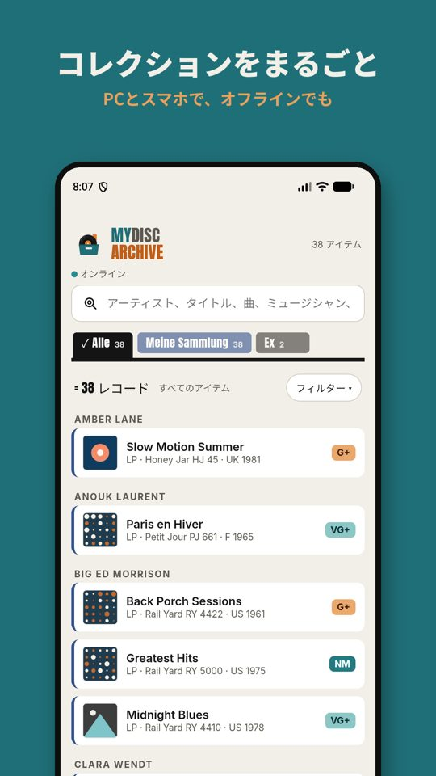
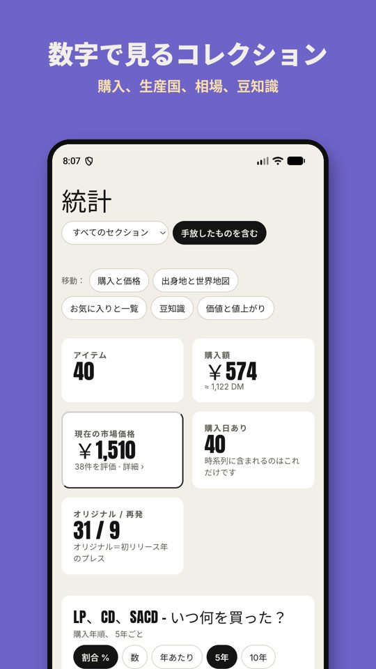
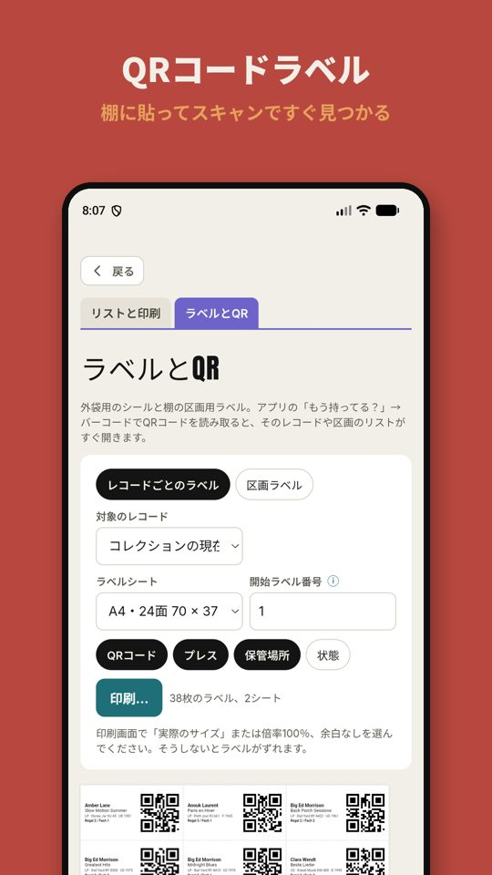
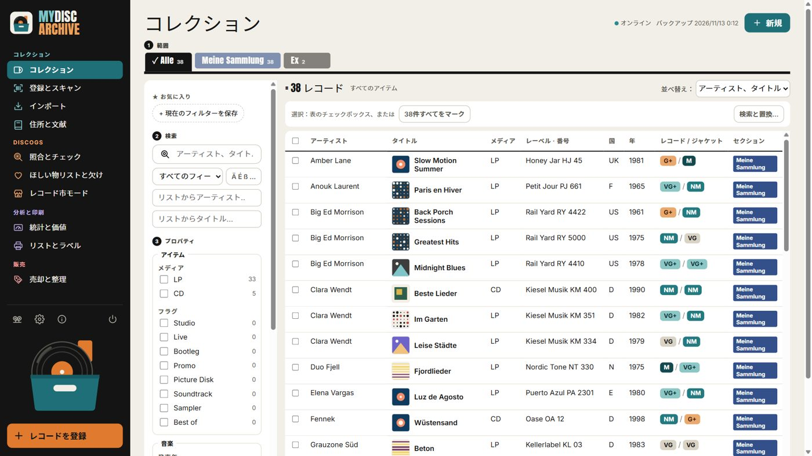

今のコレクションをそのまま取り込み
- Excel・CSVのリスト、Discogsのエクスポート、CLZ、CDPlusのデータベースを読み込み
- 1枚ずつDiscogsで正しいプレスを検索。確実な候補は自動で紐付け、不確かなものはチェックリストへ
- DiscogsのURLを貼り付けるだけで、正確に紐付け
- プレス判別アシスタント:アルバムの全バージョンを並べて表示、マトリクス番号やレーベル写真も
レコードとCDを整理・管理。Discogs連携、スマホとPCで使えます。
レコードコレクションを、すっきり整理。MyDiscArchiveは、レコード・CD・カセットをスマホとWindows PCで管理できるアプリです。クラウドも、当社のアカウントも不要です。

10言語に対応:日本語、ドイツ語、英語、スペイン語、フランス語、イタリア語、ポルトガル語、オランダ語、ポーランド語、スウェーデン語。


